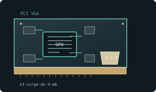

[ EARLY 2D AND 3D ACCELERATORS // IDENTIFIED COMPONENT ]
S3 ViRGE/DX 4 MB PCI
S3 ViRGE/DX multimedia accelerator, 1996. This entry identifies one specific product configuration; closely named models and partner-board variants are distinguished below.

MODEL IDENTIFICATION: Memory capacity, clock, package, and outputs vary across OEM boards; AGP ViRGE/DX is a separate implementation. 3D feature support depends on driver and software path.
Recorded specifications
| Cataloged product | S3 ViRGE/DX 4 MB PCI |
|---|---|
| Generation / chip | S3 ViRGE/DX multimedia accelerator, 1996 |
| Core & memory | ViRGE/DX graphics engine; 4 MB local DRAM on this board configuration; 2D GUI acceleration and early Direct3D-era 3D features. |
| Host interface & I/O | 32-bit PCI card with analog VGA output. This entry denotes a 4 MB PCI board, not every ViRGE/DX implementation. |
| Variant boundary | Memory capacity, clock, package, and outputs vary across OEM boards; AGP ViRGE/DX is a separate implementation. 3D feature support depends on driver and software path. |
| Archive record | Photograph label and PCB revision; record BIOS, driver version, adapters, physical condition, and source-document revision used to verify specimen. |
Compatibility & service notes
A combined 2D/3D accelerator unlike 3dfx Voodoo add-on cards. DX is a chip-family designation; memory and bus are board-specific.
Identify board vendor and chip marking before sourcing drivers. Inspect VGA solder joints and DRAM; retain original driver disk or record exact driver build for legacy OS behavior.
- Check slot signaling, keying, lane width, auxiliary power, clearance, and PSU requirements; physical insertion alone does not prove compatibility.
- Use drivers supporting this device ID and OS release. Preserve original driver/firmware before updates and record source.
- Do not energize cards with cracks, corrosion, damaged power sockets, obstructed fans, or suspected shorts; inspect before bench testing.
Manufacturer & standards sources
- S3 Graphics ViRGE/DX manufacturer archiveUse alongside the exact board label and revision; archived family data may not describe every OEM implementation.
- PCI-SIG PCI interface standardsUse alongside the exact board label and revision; archived family data may not describe every OEM implementation.
- S3 ViRGE/DX model referencesUse alongside the exact board label and revision; archived family data may not describe every OEM implementation.
Specifications describe the cataloged reference configuration only. Manufacturer manuals and physical product label take precedence for a specific OEM revision.